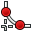

Workbench ICON/fr
You can use the code for the button, copying the grayed-out part. This code creates a link on the tool, both on the image on the text.
You can, if need be, modify the text view (the last field in bold) [[Image:Arch_Wall.png|32px|Wall|link=Arch_Wall]][[Arch_Wall| Arch_Wall]] or,
delete the text, and its link [[Image:Arch_Wall.png|32px|Wall|link=Arch_Wall]] [[Arch_Wall|Arch_Wall]] ,
The same tools in the form of buttons. See also Artwork.
 Arch Wall
Arch Wall
[[Image:Arch Wall.png|32px|Wall|link=Arch Wall]] [[Arch Wall|Arch Wall]]
 Arch Structure
Arch Structure
[[Image:Arch Structure.png|32px|Arch Structure|link=Arch Structure]] [[Arch Structure|Arch Structure]]
 Arch Cell
Arch Cell
[[Image:Arch Cell.png|32px|Arch Cell|link=Arch Cell]] [[Arch Cell|Arch Cell]]
 Arch Floor
Arch Floor
[[Image:Arch Floor.png|32px|Arch Floor|link=Arch Floor]] [[Arch Floor|Arch Floor]]
 Arch Building
Arch Building
[[Image:Arch Building.png|32px|Arch Building|link=Arch Building|Arch Building]] [[Arch Building|Arch Building]]
 Arch Site
Arch Site
[[Image:Arch Site.png|32px|Arch Site|link=Arch Site]] [[Arch Site|Arch Site]]
 Arch Window
Arch Window
[[Image:Arch Window.png|32px|Arch Window|link=Arch Window]] [[Arch Window|Arch Window]]
 Arch SectionPlane
Arch SectionPlane
[[Image:Arch SectionPlane.png|32px|Arch SectionPlane|link=Arch SectionPlane]] [[Arch SectionPlane|Arch SectionPlane]]
 Arch Axis
Arch Axis
[[Image:Arch Axis.png|32px|Arch Axis|link=Arch Axis]] [[Arch Axis|Arch Axis]]
 Arch Roof
Arch Roof
[[Image:Arch Roof.png|32px|Arch Roof|link=Arch Roof]] [[Arch Roof|Arch Roof]]
 Arch Add
Arch Add
[[Image:Arch Add.png|32px|Arch Add|link=Arch Add]] [[Arch Add|Arch Add]]
 Arch Remove
Arch Remove
[[Image:Arch Remove.png|32px|Arch Remove|link=Arch Remove]] [[ Arch Remove|Arch Remove]]
Architectural modification tools
 Arch SplitMesh
Arch SplitMesh
[[Image:Arch SplitMesh.png|32px|Arch SplitMesh|link=Arch SplitMesh]] [[Arch SplitMesh|Arch SplitMesh]]
 Arch MeshToShape
Arch MeshToShape
[[Image:Arch MeshToShape.png|32px|Arch MeshToShape|link=Arch MeshToShape]] [[Arch MeshToShape|Arch MeshToShape]]
 Arch RemoveShape
Arch RemoveShape
[[Image:Arch RemoveShape.png|32px|Arch RemoveShape|link=Arch RemoveShape]] [[Arch RemoveShape|Arch RemoveShape]]
 Arch SelectNonSolidMeshes
Arch SelectNonSolidMeshes
[[Image:Arch SelectNonSolidMeshes.png|32px|Arch SelectNonSolidMeshes|link=Arch SelectNonSolidMeshes]] [[Arch SelectNonSolidMeshes|Arch SelectNonSolidMeshes]]
 Arch CloseHoles
Arch CloseHoles
[[Image:Arch CloseHoles.png|32px|Arch CloseHoles|link=Arch CloseHoles]] [[Arch CloseHoles|Arch CloseHoles]]
 Arch Check
Arch Check
[[Image:Arch Check.png|32px|Arch Check|link=Arch Check]] [[Arch Check|Arch Check]]
 Draft Line
Draft Line
[[Image:Draft Line.png|32px|Draft Line|link=Draft Line]] [[Draft Line|Draft Line]]
 Draft Wire
Draft Wire
[[Image:Draft Wire.png|32px|Draft Wire|link=Draft Wire]] [[Draft Wire|Draft Wire]]
 Draft Circle
Draft Circle
[[Image:Draft Circle.png|32px|Draft Circle|link=Draft Circle]] [[Draft Circle|Draft Circle]]
 Draft Arc
Draft Arc
[[Image:Draft Arc.png|32px|Draft Arc|link=Draft Arc]] [[Draft Arc|Draft Arc]]
 Draft Polygon
Draft Polygon
[[Image:Draft Polygon.png|32px|Draft Polygon|link=Draft Polygon]] [[Draft Polygon|Draft Polygon]]
 Draft Rectangle
Draft Rectangle
[[Image:Draft Rectangle.png|32px|Draft Rectangle|link=Draft Rectangle]] [[Draft Rectangle|Draft Rectangle]]
 Draft Text
Draft Text
[[Image:Draft Text.png|32px|Draft Text|link=Draft Text]] [[Draft Text|Draft Text]]
 Draft Dimension
Draft Dimension
[[Image:Draft Dimension.png|32px|Draft Dimension|link=Draft Dimension]] [[Draft Dimension|Draft Dimension]]
Draft BSpline
[[Image:Draft BSpline.png|32px|Draft BSpline|link=Draft BSpline]] [[Draft BSpline|Draft BSpline]]
 Draft Point
Draft Point
[[Image:Draft Point.png|Point|32px|link=Draft Point]] [[Draft Point|Draft Point]]
Draft tools for editing objects
 Draft SelectGroup
Draft SelectGroup
[[Image:Draft SelectGroup.png|32px|Draft SelectGroup|link=Draft SelectGroup]] [[Draft SelectGroup|Draft SelectGroup]]
 Draft AddToGroup
Draft AddToGroup
[[Image:Draft AddToGroup.png|32px|Draft AddToGroup|link=Draft AddToGroup]] [[Draft AddToGroup|Draft AddToGroup]]
 Draft Move
Draft Move
[[Image:Draft Move.png|32px|Draft Move|link=Draft Move]] [[Draft Move|Draft Move]]
 Draft Rotate
Draft Rotate
[[Image:Draft Rotate.png|32px|Draft Rotate|link=Draft Rotate]] [[Draft Rotate|Draft Rotate]]
 Draft Offset
Draft Offset
[[Image:Draft Offset.png|32px|Draft Offset|link=Draft Offset]] [[Draft Offset|Draft Offset]]
Draft Trimex
[[Image:Draft Trimex.png|32px|Draft Trimex|link=Draft Trimex]] [[Draft Trimex|Draft Trimex]]
 Draft Upgrade
Draft Upgrade
[[Image:Draft Upgrade.png|32px|Draft Upgrade|link=Draft Upgrade]] [[Draft Upgrade|Draft Upgrade]]
 Draft Downgrade
Draft Downgrade
[[Image:Draft Downgrade.png|32px|Draft Downgrade|link=Draft Downgrade]] [[Draft Downgrade|Draft Downgrade]]
 Draft Scale
Draft Scale
[[Image:Draft Scale.png|32px|Draft Scale|link=Draft Scale]] [[Draft Scale|Draft Scale]]
Draft Drawing
[[Image:Draft PutOnSheet.png|32px|Draft Drawing|link=Draft Drawing]] [[Draft Drawing|Draft Drawing]]
 Draft Edit
Draft Edit
[[Image:Draft Edit.png|32px|Draft Edit|link=Draft Edit]] [[ Draft Edit|Draft Edit]]
 Draft WireToBSpline
Draft WireToBSpline
[[Image:Draft WireToBSpline.png|32px|Draft WireToBSpline|link=Draft WireToBSpline]] [[Draft WireToBSpline|Draft WireToBSpline]]
 Draft AddPoint
Draft AddPoint
[[Image:Draft AddPoint.png|32px|Draft AddPoint|link=Draft AddPoint]] [[Draft AddPoint|Draft AddPoint]]
 Draft DelPoint
Draft DelPoint
[[Image:Draft DelPoint.png|32px|Draft DelPoint|link=Draft DelPoint]] [[Draft DelPoint|Draft DelPoint]]
Draft Shape2DView
[[Image:Draft Shape2DView.png|32px|Draft Shape2DView|link=Draft Shape2DView]] [[Draft Shape2DView|Draft Shape2DView]]
 Draft Draft2Sketch
Draft Draft2Sketch
[[Image:Draft Draft2Sketch.png|32px|Draft Draft2Sketch|link=Draft Draft2Sketch]] [[Draft Draft2Sketch|Draft Draft2Sketch]]
 Draft Array
Draft Array
[[Image:Draft Array.png|32px|Draft Array|link=Draft Array]] [[Draft Array|Draft Array]]
 Draft Clone
Draft Clone
[[Image:Draft Clone.png|32px|Draft Clone|link=Draft Clone]] [[Draft Clone|Draft Clone]]
Draft Snap
 Snap Midpoint
Snap Midpoint
[[Image:Snap Midpoint.png|32px|Snap Midpoint|link=Draft Snap]] [[Draft Snap|Snap Midpoint]]
 Snap Perpendicular
Snap Perpendicular
[[Image:Snap Perpendicular.png|32px|Snap Perpendicular|link=Draft Snap]] [[Draft Snap|Snap Perpendicular]]
 Snap Grid
Snap Grid
[[Image:Snap Grid.png|32px|Snap Grid|link=Draft Snap]] [[Draft Snap|Snap Grid]]
 Snap Intersection
Snap Intersection
[[Image:Snap Intersection.png|32px|Snap Intersection|link=Draft Snap]] [[Draft Snap|Snap Intersection]]
 Snap Parallel
Snap Parallel
[[Image:Snap Parallel.png|32px|Snap Parallel|link=Draft Snap]] [[Draft Snap|Snap Parallel]]
 Snap Endpoint
Snap Endpoint
[[Image:Snap Endpoint.png|32px|Snap Endpoint|link=Draft Snap]] [[Draft Snap|Snap Endpoint]]
 Snap Angle
Snap Angle
[[Image:Snap Angle.png|32px|Snap Angle|link=Draft Snap]] [[Draft Snap|Snap Angle]]
 Snap Center
Snap Center
[[Image:Snap Center.png|32px|Snap Center|link=Draft Snap]] [[Draft Snap|Snap Center]]
 Snap Extension
Snap Extension
[[Image:Snap Extension.png|32px|Snap Extension|link=Draft Snap]] [[Draft Snap|Snap Extension]]
 Snap Near
Snap Near
[[Image:Snap Near.png|32px|Snap Near|link=Draft Snap]] [[Draft Snap|Snap Near]]
 Snap Ortho
Snap Ortho
[[Image:Snap Ortho.png|32px|Snap Ortho|link=Draft Snap]] [[Draft Snap|Snap Ortho]]
 Draft ShowSnapBar
Draft ShowSnapBar
[[Image:Draft ShowSnapBar.png|32px|Draft ShowSnapBar|link=Draft Snap]] [[Draft Snap|Draft ShowSnapBar]]
 Snap Lock
Snap Lock
[[Image:Snap Lock.png|32px|Snap Lock|link=Draft Snap]] [[Draft Snap|Snap Lock]]
Plot Workbench
 Plot Save
Plot Save
[[Image:Plot Save.png|32px|Plot Save|link=Plot Save]] [[Plot Save|Plot Save]]
 Plot Axes
Plot Axes
[[Image:Plot Axes.png|32px|Plot Axes|link=Plot Axes]] [[Plot Axes|Plot Axes]]
 Plot Series
Plot Series
[[Image:Plot Series.png|32px|Plot Series|link=Plot Series]] [[Plot Series|Plot Series]]
 Plot Grid
Plot Grid
[[Image:Plot Grid.png|32px|Plot Grid|link=Plot Grid]] [[Plot Grid|Plot Grid]]
 Plot Legend
Plot Legend
[[Image:Plot Legend.png|32px|Plot Legend|link=Plot Legend]] [[Plot Legend|Plot Legend]]
 Plot Labels
Plot Labels
[[Image:Plot Labels.png|32px|Plot Labels|link=Plot Labels]] [[Plot Labels|Plot Labels]]
 Plot Positions
Plot Positions
[[Image:Plot Positions.png|32px|Plot Positions|link=Plot Positions]] [[Plot Positions|Plot Positions]]
 Drawing Open SVG
Drawing Open SVG
[[Image:Drawing Open SVG.png|32px|Drawing Open SVG|link=Drawing Open SVG]] [[Drawing Open SVG|Drawing Open SVG]]
 Drawing Landscape A3
Drawing Landscape A3
[[Image:Drawing Landscape A3.png|32px|Drawing Landscape A3|link=Drawing Landscape A3]] [[Drawing Landscape A3|Drawing Landscape A3]]
 Drawing View
Drawing View
[[Image:Drawing View.png|32px|Drawing View|link=Drawing View]] [[Drawing View|Drawing View]]
Drawing Orthoviews
[[Image:Drawing Orthoviews.png|32px|Drawing Orthoviews|link=Drawing Orthoviews]] [[Drawing Orthoviews|Drawing Orthoviews]]
 Drawing Openbrowser
Drawing Openbrowser
[[Image:Drawing Openbrowser.png|32px|Drawing Openbrowser|link=Drawing Openbrowser]] [[Drawing Openbrowser|Drawing Openbrowser]]
 Drawing Annotation
Drawing Annotation
[[Image:Drawing Annotation.png|32px|Drawing Annotation|link=Drawing Annotation]] [[Drawing Annotation|Drawing Annotation]]
 Drawing Clip
Drawing Clip
[[Image:Drawing Clip.png|32px|Drawing Clip|link=Drawing Clip]] [[Drawing Clip|Drawing Clip]]
 Drawing Save
Drawing Save
[[Image:Drawing Save.png|32px|Drawing Save|link=Drawing Save]] [[Drawing Save|Drawing Save]]
Fem
 ColorCodeShape
ColorCodeShape
[[Image:OpenSCAD ColorCodeShape.png|32px|OpenSCAD ColorCodeShape|link=OpenSCAD ColorCodeShape]] [[OpenSCAD ColorCodeShape|ColorCodeShape]]
 OpenSCAD Edgestofaces
OpenSCAD Edgestofaces
[[Image:OpenSCAD Edgestofaces.png|32px|OpenSCAD Edgestofaces|link=OpenSCAD Edgestofaces]] [[OpenSCAD Edgestofaces|OpenSCAD Edgestofaces]]
 OpenSCAD RefineShapeFeature
OpenSCAD RefineShapeFeature
[[Image:OpenSCAD RefineShapeFeature.png|32px|OpenSCAD RefineShapeFeature|link=OpenSCAD RefineShapeFeature]] [[OpenSCAD RefineShapeFeature|OpenSCAD RefineShapeFeature]]
 OpenSCAD ExpandPlacements
OpenSCAD ExpandPlacements
[[Image:OpenSCAD ExpandPlacements.png|32px|OpenSCAD ExpandPlacements|link=OpenSCAD ExpandPlacements]] [[OpenSCAD ExpandPlacements|OpenSCAD ExpandPlacements]]
 OpenSCAD ReplaceObject
OpenSCAD ReplaceObject
[[Image:OpenSCAD ReplaceObject.png|32px|OpenSCAD ReplaceObject|link=OpenSCAD ReplaceObject]] [[OpenSCAD ReplaceObject|OpenSCAD ReplaceObject]]
OpenSCAD RemoveSubtree
[[Image:OpenSCAD RemoveSubtree.png|32px|OpenSCAD RemoveSubtree|link=OpenSCAD RemoveSubtree]] [[OpenSCAD RemoveSubtree|OpenSCAD RemoveSubtree]]
 OpenSCAD AddOpenSCADElement
OpenSCAD AddOpenSCADElement
[[Image:OpenSCAD AddOpenSCADElement.png|32px|OpenSCAD AddOpenSCADElement|link=OpenSCAD AddOpenSCADElement]] [[OpenSCAD AddOpenSCADElement|OpenSCAD AddOpenSCADElement]]
 Part Box
Part Box
[[Image:Part Box.png|32px|Part Box|link=Part Box]] [[Part Box|Part Box]]
 Part Cylinder
Part Cylinder
[[Image:Part Cylinder.png|32px|Part Cylinder|link=Part Cylinder]] [[Part Cylinder|Part Cylinder]]
 Part Sphere
Part Sphere
[[Image:Part Sphere.png|32px|Part Sphere|link=Part Sphere]] [[Part Sphere|Part Sphere]]
 Part Cone
Part Cone
[[Image:Part Cone.png|32px|Part Cone|link=Part Cone]] [[Part Cone|Part Cone]]
Part Torus
[[Image:Part Torus.png|32px|Part Torus|link=Part Torus]] [[Part Torus|Part Torus]]
 Part CreatePrimitives
Part CreatePrimitives
[[Image:Part CreatePrimitives.png|32px|Part CreatePrimitives|link=Part CreatePrimitives]] [[Part CreatePrimitives|Part CreatePrimitives]]
 Part Shapebuilder
Part Shapebuilder
[[Image:Part Shapebuilder.png|32px|Part Shapebuilder|link=Part Shapebuilder]] [[Part Shapebuilder|Part Shapebuilder]]
Part Editing tools
 Part Extrude
Part Extrude
[[Image:Part Extrude.png|32px|Part Extrude|link=Part Extrude]] [[Part Extrude|Part Extrude]]
 Part Revolve
Part Revolve
[[Image:Part Revolve.png|32px|Part Revolve|link=Part Revolve]] [[Part Revolve|Part Revolve]]
 Part Mirror
Part Mirror
[[Image:Part Mirror.png|32px|Part Mirror|link=Part Mirror]] [[Part Mirror|Part Mirror]]
 Part Fillet
Part Fillet
[[Image:Part Fillet.png|32px|Part Fillet|link=Part Fillet]] [[Part Fillet|Part Fillet]]
 Part Chamfer
Part Chamfer
[[Image:Part Chamfer.png|32px|Part Chamfer|link=Part Chamfer]] [[Part Chamfer|Part Chamfer]]
Part Boolean tools
 Part Booleans
Part Booleans
[[Image:Part Booleans.png|32px|Part Booleans|link=Part Booleans]] [[Part Booleans|Part Booleans]]
 Part Cut
Part Cut
[[Image:Part Cut.png|32px|Part Cut|link=Part Cut]] [[Part Cut|Part Cut]]
 Part Union
Part Union
[[Image:Part Union.png|32px|Part Union|link=Part Union]] [[Part Union|Part Union]]
 Part Common
Part Common
[[Image:Part Common.png|32px|Part Common|link=Part Common]] [[Part Common|Part Common]]
 Part Section
Part Section
[[Image:Part Section.png|32px|Part Section|link=Part Section]] [[Part Section|Part Section]]
PartDesign Construction tools
 PartDesign Pad
PartDesign Pad
[[File:PartDesign Pad.png|32px|PartDesign Pad|link=PartDesign Pad]] [[PartDesign Pad|PartDesign Pad]]
 PartDesign Pocket
PartDesign Pocket
[[File:PartDesign Pocket.png|32px|PartDesign Pocket|link=PartDesign Pocket]] [[PartDesign Pocket|PartDesign Pocket]]
 PartDesign Revolution
PartDesign Revolution
[[File:PartDesign Revolution.png|32px|PartDesign Revolution|link=PartDesign Revolution]] [[PartDesign Revolution|PartDesign Revolution]]
 PartDesign Groove
PartDesign Groove
[[File:PartDesign Groove.png|32px|PartDesign Groove|link=PartDesign Groove]] [[PartDesign Groove|PartDesign Groove]]
PartDesign Editing tools
 PartDesign Fillet
PartDesign Fillet
[[File:PartDesign Fillet.png|32px|PartDesign Fillet|link=PartDesign Fillet]] [[PartDesign Fillet|PartDesign Fillet]]
 PartDesign Chamfer
PartDesign Chamfer
[[File:PartDesign Chamfer.png|32px|PartDesign Chamfer|link=PartDesign Chamfer]] [[PartDesign Chamfer|PartDesign Chamfer]]
PartDesign Transform tools
 PartDesign Mirrored
PartDesign Mirrored
[[File:PartDesign Mirrored.png|32px|PartDesign Mirrored|link=PartDesign Mirrored]] [[PartDesign Mirrored|PartDesign Mirrored]]
 PartDesign LinearPattern
PartDesign LinearPattern
[[Image:PartDesign LinearPattern.png|32px|PartDesign LinearPattern|link=PartDesign LinearPattern]] [[PartDesign LinearPattern|PartDesign LinearPattern]]
 PartDesign PolarPattern
PartDesign PolarPattern
[[File:PartDesign PolarPattern.png|32px|PartDesign PolarPattern|link=PartDesign PolarPattern]] [[PartDesign PolarPattern|PartDesign PolarPattern]]
 PartDesign Scaled
PartDesign Scaled
[[File:PartDesign Scaled.png|32px|PartDesign Scaled|link=PartDesign Scaled]] [[PartDesign Scaled|PartDesign Scaled]]
 PartDesign MultiTransform
PartDesign MultiTransform
[[File:PartDesign MultiTransform.png|32px|PartDesign MultiTransform|link=PartDesign MultiTransform]] [[PartDesign MultiTransform|PartDesign MultiTransform]]
[[File:Part Import.svg|32px|Part Import]]
 Raytracing New
Raytracing New
[[Image:Raytracing New.png|32px|Raytracing New|link=Raytracing New]] [[Raytracing New|Raytracing New]]
 Raytracing Export
Raytracing Export
[[Image:Raytracing Export.png|32px|Raytracing Export|link=Raytracing Export]] [[Raytracing Export|Raytracing Export]]
Raytracing Camera
[[Image:Raytracing Camera.png|32px|Raytracing Camera|link=Raytracing Camera]] [[Raytracing Camera|Raytracing Camera]]
 Raytracing Part
Raytracing Part
[[Image:Raytracing Part.png|32px|Raytracing Part|link=Raytracing Part]] [[Raytracing Part|Raytracing Part]]
 Robot CreateRobot
Robot CreateRobot
[[Image:Robot CreateRobot.png|32px|Robot CreateRobot|link=Robot CreateRobot]] [[Robot CreateRobot|Robot CreateRobot]]
 Robot Simulate
Robot Simulate
[[Image:Robot Simulate.png|32px|Robot Simulate|link=Robot Simulate]] [[Robot Simulate|Robot Simulate]]
 Robot Export
Robot Export
[[Image:Robot Export.png|32px|Robot Export|link=Robot Export]] [[Robot Export|Robot Export]]
Robot SetHomePos
[[Image:Robot SetHomePos.png|32px|Robot SetHomePos|link=Robot SetHomePos]] [[Robot SetHomePos|Robot SetHomePos]]
Robot RestoreHomePos
[[Image:Robot RestoreHomePos.png|32px|Robot RestoreHomePos|link=Robot RestoreHomePos]] [[Robot RestoreHomePos|Robot RestoreHomePos]]
Robot CreateTrajectory no parametric
 Robot CreateTrajectory
Robot CreateTrajectory
[[Image:Robot CreateTrajectory.png|32px|Robot CreateTrajectory|link=Robot CreateTrajectory]] [[Robot CreateTrajectory|Robot CreateTrajectory]]
 Robot SetDefaultOrientation
Robot SetDefaultOrientation
[[Image:Robot SetDefaultOrientation.png|32px|Robot SetDefaultOrientation|link=Robot SetDefaultOrientation]] [[Robot SetDefaultOrientation|Robot SetDefaultOrientation]]
 Robot SetDefaultValues
Robot SetDefaultValues
[[Image:Robot SetDefaultValues.png|32px|Robot SetDefaultValues|link=Robot SetDefaultValues]] [[Robot SetDefaultValues|Robot SetDefaultValues]]
 Robot InsertWaypoint
Robot InsertWaypoint
[[Image:Robot InsertWaypoint.png|32px|Robot InsertWaypoint|link=Robot InsertWaypoint]] [[Robot InsertWaypoint|Robot InsertWaypoint]]
 Robot InsertWaypointPre
Robot InsertWaypointPre
[[Image:Robot InsertWaypointPre.png|32px|Robot InsertWaypointPre|link=Robot InsertWaypointPre]] [[Robot InsertWaypointPre|Robot InsertWaypointPre]]
Robot CreateTrajectory parametric
 Robot Edge2Trac
Robot Edge2Trac
[[Image:Robot Edge2Trac.png|32px|Robot Edge2Trac|link=Robot Edge2Trac]] [[Robot Edge2Trac|Robot Edge2Trac]]
 Robot TrajectoryDressUp
Robot TrajectoryDressUp
[[Image:Robot TrajectoryDressUp.png|32px|Robot TrajectoryDressUp|link=Robot TrajectoryDressUp]] [[Robot TrajectoryDressUp|Robot TrajectoryDressUp]]
 Robot TrajectoryCompound
Robot TrajectoryCompound
[[Image:Robot TrajectoryCompound.png|32px|Robot TrajectoryCompound|link=Robot TrajectoryCompound]] [[Robot TrajectoryCompound|Robot TrajectoryCompound]]
 The ship tools
The ship tools
 FreeCAD-Ship-Load
FreeCAD-Ship-Load
[[Image:FreeCAD-Ship-LoadIco.png|32px|FreeCAD-Ship-LoadIco|link=]] FreeCAD-Ship-LoadIco
FreeCAD Ship
[[Image:FreeCAD-Ship-Ico.png|32px|FreeCAD-Ship|link=]] FreeCAD-Ship
 FreeCAD-Ship-ShipInstance
FreeCAD-Ship-ShipInstance
[[Image:FreeCAD-Ship-ShipInstance.png|32px|FreeCAD-Ship-ShipInstance|link=]] FreeCAD-Ship-ShipInstance
 FreeCAD-Ship-OutlineDraw
FreeCAD-Ship-OutlineDraw
[[Image:FreeCAD-Ship-OutlineDrawIco.png|32px|FreeCAD-Ship-OutlineDraw|link=]] FreeCAD-Ship-OutlineDraw
 FreeCAD-Ship-AreaCurve
FreeCAD-Ship-AreaCurve
[[Image:FreeCAD-Ship-AreaCurveIco.png|32px|FreeCAD-Ship-AreaCurve|link=]] FreeCAD-Ship-AreaCurve
 FreeCAD-Ship-Hydrostatics
FreeCAD-Ship-Hydrostatics
[[Image:FreeCAD-Ship-HydrostaticsIco.png|32px|FreeCAD-Ship-Hydrostatics|link=]] FreeCAD-Ship-Hydrostatics
 Sketcher Point
Sketcher Point
[[Image:Sketcher Point.png|32px|Sketcher Point|link=Sketcher Point]] [[Sketcher Point|Sketcher Point]]
 Sketcher Arc
Sketcher Arc
[[Image:Sketcher Arc.png|32px|Sketcher Arc|link=Sketcher Arc]] [[Sketcher Arc|Sketcher Arc]]
 Sketcher Circle
Sketcher Circle
[[Image:Sketcher Circle.png|32px|Sketcher Circle|link=Sketcher Circle]] [[Sketcher Circle|Sketcher Circle]]
 Sketcher Line
Sketcher Line
[[Image:Sketcher Line.png|32px|Sketcher Line|link=Sketcher Line]] [[Sketcher Line|Sketcher Line]]
 Sketcher CreatePolyline
Sketcher CreatePolyline
[[Image:Sketcher CreatePolyline.png|32px|Sketcher CreatePolyline|link=Sketcher Polyline]] [[Sketcher Polyline|Sketcher CreatePolyline]]
 Sketcher CreateRectangle
Sketcher CreateRectangle
[[Image:Sketcher CreateRectangle.png|32px|Sketcher CreateRectangle|link=Sketcher Rectangle]] [[Sketcher Rectangle|Sketcher CreateRectangle]]
 Sketcher CreateFillet
[[Image:Sketcher CreateFillet.png|32px|Sketcher CreateFillet|link=Sketcher Fillet]] [[Sketcher Fillet|Sketcher CreateFillet]]
 Sketcher Trimming
Sketcher Trimming
[[Image:Sketcher Trimming.png|32px|Sketcher Trimming|link=Sketcher Trimming]] [[Sketcher Trimming|Sketcher Trimming]]
 Sketcher External
Sketcher External
[[Image:Sketcher External.png|32px|Sketcher External|link=Sketcher External]][[Sketcher External|Sketcher External]]
 Sketcher AlterConstruction
Sketcher AlterConstruction
[[Image:Sketcher AlterConstruction.png|32px|Sketcher AlterConstruction|link=Sketcher ConstructionMode]] [[Sketcher ConstructionMode|Sketcher AlterConstruction]]
 Sketcher NewSketch
Sketcher NewSketch
[[Image:Sketcher Sketch.png|32px|Sketcher NewSketch|link=Sketcher NewSketch]] [[Sketcher NewSketch|Sketcher NewSketch]]
 Sketcher ViewSketch
Sketcher ViewSketch
[[File:Sketcher ViewSketch.png|32px|Sketcher ViewSketch|link=Sketcher ViewSketch]] [[Sketcher ViewSketch|Sketcher ViewSketch]]
 Sketcher MapSketch
Sketcher MapSketch
[[Image:Sketcher MapSketch.png|32px|Sketcher MapSketch|link=Sketcher MapSketch]] [[Sketcher MapSketch|Sketcher MapSketch]]
 Sketcher LeaveSketch
Sketcher LeaveSketch
[[Image:Sketcher LeaveSketch.png|32px|Sketcher LeaveSketch|link=Sketcher LeaveSketch]] [[Sketcher LeaveSketch|Sketcher LeaveSketch]]
Sketcher Constrain
 Sketcher ConstrainLock
Sketcher ConstrainLock
[[Image:Sketcher ConstrainLock.png|32px|Sketcher ConstrainLock|link=Constraint Lock]] [[Constraint Lock|Sketcher ConstrainLock]]
 Constraint PointOnPoint
Constraint PointOnPoint
[[Image:Constraint PointOnPoint.png|32px|Constraint PointOnPoint|link=Constraint PointOnPoint]] [[Constraint PointOnPoint|Constraint PointOnPoint]]
 Constraint PointOnObject
Constraint PointOnObject
[[Image:Constraint PointOnObject.png|32px|Constraint PointOnObject|link=Constraint PointOnObject]] [[Constraint PointOnObject|Constraint PointOnObject]]
 Constraint HorizontalDistance
Constraint HorizontalDistance
[[Image:Constraint HorizontalDistance.png|32px|Constraint HorizontalDistance|link=Constraint HorizontalDistance]] [[Constraint HorizontalDistance|Constraint HorizontalDistance]]
 Constraint VerticalDistance
Constraint VerticalDistance
[[Image:Constraint VerticalDistance.png|32px|Constraint VerticalDistance|link=Constraint VerticalDistance]] [[Constraint VerticalDistance|Constraint VerticalDistance]]
 Constraint Vertical
Constraint Vertical
[[Image:Constraint Vertical.png|32px|Constraint Vertical|link=Constraint Vertical]] [[Constraint Vertical|Constraint Vertical]]
 Constraint Horizontal
Constraint Horizontal
[[Image:Constraint Horizontal.png|32px|Constraint Horizontal |link=Constraint Horizontal]] [[Constraint Horizontal|Constraint Horizontal]]
 Constraint Length
Constraint Length
[[Image:Constraint Length.png|32px|Constraint Length|link=Constraint Length]] [[Constraint Length|Constraint Length]]
 Constraint Radius
Constraint Radius
[[Image:Constraint Radius.png|32px|Constraint Radius|link=Constraint Radius]] [[Constraint Radius|Constraint Radius]]
 Constraint Parallel
Constraint Parallel
[[Image:Constraint Parallel.png|32px|Constraint Parallel|link=Constraint Parallel]] [[Constraint Parallel|Constraint Parallel]]
 Constraint Perpendicular
Constraint Perpendicular
[[Image:Constraint Perpendicular.png|32px|Constraint Perpendicular|link=Constraint Perpendicular]] [[Constraint Perpendicular|Constraint Perpendicular]]
Constraint InternalAngle
[[Image:Constraint InternalAngle.png|32px|Constraint InternalAngle|link=Constraint InternalAngle]] [[Constraint InternalAngle|Constraint InternalAngle]]
 Constraint Tangent
Constraint Tangent
[[Image:Constraint Tangent.png|32px|Constraint Tangent|link=Constraint Tangent]] [[Constraint Tangent|Constraint Tangent]]
 Constraint EqualLength
Constraint EqualLength
[[Image:Constraint EqualLength.png|32px|Constraint EqualLength|link=Constraint EqualLength]] [[Constraint EqualLength|Constraint EqualLength]]
 Constraint Symmetric
Constraint Symmetric
[[Image:Constraint Symmetric.png|32px|Constraint Symmetric|link=Constraint Symmetric]] [[Constraint Symmetric|Constraint Symmetric]]
 Constraint Concentric
Constraint Concentric
[[File:Constraint Concentric.svg|32px|Constraint Concentric|link=Constraint Concentric]] [[Constraint Concentric|Constraint Concentric]]
Constraint ExternalAngle
[[File:Constraint ExternalAngle.svg|32px|Constraint ExternalAngle|link=Constraint ExternalAngle]] [[Constraint ExternalAngle|Constraint ExternalAngle]]
 Constraint PointOnEnd
Constraint PointOnEnd
[[File:Constraint PointOnEnd.svg|32px|Constraint PointOnEnd|link=Constraint PointOnEnd]] [[Constraint PointOnEnd|Constraint PointOnEnd]]
 Constraint PointOnMidPoint
Constraint PointOnMidPoint
[[File:Constraint PointOnMidPoint.svg|32px|Constraint PointOnMidPoint|link=Constraint PointOnMidPoint]] [[Constraint PointOnMidPoint|Constraint PointOnMidPoint]]
Constraint PointOnStart
[[File:Constraint PointOnStart.svg|32px|Constraint PointOnStart|link=Constraint PointOnStart]] [[Constraint PointOnStart|Constraint PointOnStart]]
 Constraint PointToObject
Constraint PointToObject
[[File:Constraint PointToObject.svg|32px|Constraint PointToObject|link=Constraint PointToObject]] [[Constraint PointToObject|Constraint PointToObject]]
 Constraint TangentToEnd
Constraint TangentToEnd
[[File:Constraint TangentToEnd.svg|32px|Constraint TangentToEnd|link=Constraint TangentToEnd]] [[Constraint TangentToEnd|Constraint TangentToEnd]]
 Constraint TangentToStart
Constraint TangentToStart
[[File:Constraint TangentToStart.svg|32px|Constraint TangentToStart|link=Constraint TangentToStart]] [[Constraint TangentToStart|Constraint TangentToStart]]
Draft The wireline tools
 Draft UndoLine
Draft UndoLine
[[Image:Draft UndoLine.png|32px|Draft UndoLine|link=Draft UndoLine]] [[Draft UndoLine|Draft UndoLine]]
 Draft FinishLine
Draft FinishLine
[[Image:Draft FinishLine.png|32px|Draft FinishLine|link=Draft FinishLine]] [[Draft FinishLine|Draft FinishLine]]
 Draft CloseLine
Draft CloseLine
[[Image:Draft CloseLine.png|32px|Draft CloseLine|link=Draft CloseLine]] [[Draft CloseLine|Draft CloseLine]]
 Draft SelectPlan
Draft SelectPlan
[[Image:Draft SelectPlane.png|32px|Draft SelectPlan|link=Draft SelectPlane]] [[Draft SelectPlane|Draft SelectPlan]]
 Draft ToggleConstructionMode
Draft ToggleConstructionMode
[[Image:Draft ToggleConstructionMode.png|32px|Draft ToggleConstructionMode|link=Draft ToggleConstructionMode]] [[Draft ToggleConstructionMode|Draft ToggleConstructionMode]]
 Draft ToggleContinueMode
Draft ToggleContinueMode
[[Image:Draft ToggleContinueMode.png|32px|Draft ToggleContinueMode|link=Draft ToggleContinueMode]] [[Draft ToggleContinueMode|Draft ToggleContinueMode]]
 Draft Apply
Draft Apply
[[Image:Draft Apply.png|32px|Draft Apply|link=Draft Apply]] [[Draft Apply|Draft Apply]]
 Draft ToggleDisplayMode
Draft ToggleDisplayMode
[[Image:Draft ToggleDisplayMode.png|32px|Draft ToggleDisplayMode|link=Draft ToggleDisplayMode]] [[Draft ToggleDisplayMode|Draft ToggleDisplayMode]]
Draft AddToGroup
[[Image:Draft AddToGroup.png|32px|Draft AddToGroup|link=Draft AddToGroup]] [[Draft AddToGroup|Draft AddToGroup]]
Draft SelectGroup
[[Image:Draft SelectGroup.png|32px|Draft SelectGroup|link=Draft SelectGroup]] [[Draft SelectGroup|Draft SelectGroup]]
 Draft ToggleSnap
Draft ToggleSnap
[[Image:Draft ToggleSnap.png|32px|Draft ToggleSnap|link=Draft ToggleSnap]] [[Draft ToggleSnap|Draft ToggleSnap]]
 Draft ToggleGrid
Draft ToggleGrid
[[Image:Draft ToggleGrid.png|32px|Draft ToggleGrid|link=Draft ToggleGrid]] [[Draft ToggleGrid|Draft ToggleGrid]]
Draft ShowSnapBar
[[Image:Draft ShowSnapBar.png|32px|Draft ShowSnapBar|link=Draft ShowSnapBar]] [[Draft ShowSnapBar|Draft ShowSnapBar]]
Workbench
Arch Module
[[Image:Arch Wall.png|32px|Arch Wall|link=Arch Module]] [[Arch Module|Arch Module]]
 Complete Workbench
Complete Workbench
[[Image:Workbench Complete.svg|32px|Workbench Complete|link=Complete Workbench]] [[Complete Workbench|Complete Workbench]]
 Draft Module
Draft Module
[[Image:Workbench Draft.png|32px|Workbench Draft|link=Draft Module]] [[Draft Module|Workbench Draft]]
 Drawing Workbench
Drawing Workbench
[[Image:Workbench Drawing.png|32px|Drawing Workbench|link=Drawing Workbench]] [[Drawing Workbench|Drawing Workbench]]
FEM project
[[Image:Workbench FEM.png|32px|Workbench FEM|link=FEM project]] [[FEM project|FEM project]]
Image Workbench
[[Image:Workbench Image.png|32px|Image Workbench|link=Workbench Image]] [[Image Workbench|Image Workbench]]
 Mesh Module
Mesh Module
[[Image:Workbench Mesh.png|32px|Workbench Mesh|link=Mesh Module]] [[Mesh Module|Mesh Module]]
OpenSCAD Module
[[Image:Workbench OpenSCAD.png|32px|Workbench OpenSCAD|link=OpenSCAD Module]] [[OpenSCAD Module|OpenSCAD Module]]
Part Module
[[Image:Workbench Part.png|32px|Workbench Part|link=Part Module]] [[Part Module|Part Module]]
 PartDesign Workbench
PartDesign Workbench
[[Image:Workbench PartDesign.png|32px|Workbench PartDesign|link=PartDesign Workbench]] [[PartDesign Workbench|PartDesign Workbench]]
Module Points Points Module
[[Image:Points Module.png|32px|Module Points|link=Points Module]] [[Points Module|Points Module]]
 Raytracing Module
Raytracing Module
[[Image:Workbench Raytracing.svg|32px|Workbench Raytracing|link=Raytracing Module]] [[Raytracing Module|Raytracing Module]]
Robot Workbench
[[Image:Workbench Robot.png|32px|Workbench Robot|link=Robot Workbench]] [[Robot Workbench|Robot Workbench]]
FreeCADShip Workbench
[[Image:FreeCAD-Ship-Ico.png|32px|FreeCADShip Workbench|link=FreeCADShip Workbench]] [[FreeCADShip Workbench|FreeCADShip Workbench]]
 Sketcher Workbench
Sketcher Workbench
[[Image:Workbench Sketcher.png|32px|Sketcher Workbench|link=Sketcher Workbench]] [[Sketcher Workbench|Sketcher Workbench]]
 Start Workbench
Start Workbench
[[Image:Workbench Start.svg|32px|Workbench Start|link=Start Workbench]] [[Start Workbench|Start Workbench]]
 Web Workbench
Web Workbench
[[Image:Workbench Web.svg|32px|Workbench Web|link=Main Page]] [[Web Workbench|Web Workbench]]
Other

[[Image:Case a cocher O.png|16px]]

[[Image:Case a cocher N.png|16px]]
TRUE
{{TRUE}}
FALSE
{{FALSE}}

[[Image:View-zoom-all.svg|32px|vertical-align: top=zoom-all]]

[[Image:View-zoom-border.svg|32px|zoom-border]]

[[Image:View-zoom-in.svg|32px|zoom-in]]

[[Image:View-zoom-out.svg|32px|zoom-out]]

[[Image:View-perspective.svg|32px|perspective]]

[[Image:View-isometric.svg|32px|isometric]]

[[Image:View-bottom.svg|32px|bottom]]
[[Image:View-rear.svg|32px|rear]]
[[Image:View-right.svg|32px|right]]

[[Image:View-left.svg|32px|View-left]]

[[Image:View-front.svg|32px|front]]

[[Image:View-top.svg|32px|top]]

[[File:View-zoom-selection.svg|32px|View-zoom-selection]]
[[File:View-zoom-out.png|32px|View-zoom-out]]
[[File:View-zoom-in.svg|32px|View-zoom-in]]
[[File:View-zoom-border.svg|32px|View-zoom-border]]
[[File:View-zoom-all.svg|32px|View-zoom-all]]
[[File:Tree Annotation.svg|32px|Tree Annotation]]

[[File:Measure.svg|32px|Measure]]
STD (editor)
 Std About
Std About
[[File:Std About.png|32px|Std About|link=Std About]] [[Std About|Std About]]
 Std AboutQt
Std AboutQt
[[File:Std AboutQt.png|32px|Std AboutQt|link=Std AboutQt]] [[Std AboutQt|Std AboutQt]]
 Std ClippingPlane
Std ClippingPlane
[[File:Std ClippingPlane.png|32px|Std ClippingPlane|link=Std ClippingPlane]] [[Std ClippingPlane|Std ClippingPlane]]
 Std CommandLine
Std CommandLine
[[File:Std CommandLine.png|32px|Std CommandLine|link=Std CommandLine]] [[Std CommandLine|Std CommandLine]]
 Std Copy
Std Copy
[[File:Std Copy.png|32px|Std Copy|link=Std Copy]] [[Std Copy|Std Copy]]
 Std Cut
Std Cut
[[File:Std Cut.png|32px|Std Cut|link=Std Cut]] [[Std Cut|Std Cut]]
 Std Delete
Std Delete
[[File:Std Delete.png|32px|Std Delete|link=Std Delete]] [[Std Delete|Std Delete]]
 Std DlgCustomize
Std DlgCustomize
[[File:Std DlgCustomize.png|32px|Std DlgCustomize|link=Std DlgCustomize]] [[Std DlgCustomize|Std DlgCustomize]]
 Std DlgMacroExecute
Std DlgMacroExecute
[[File:Std DlgMacroExecute.png|32px|Std DlgMacroExecute|link=Std DlgMacroExecute]] [[Std DlgMacroExecute|Std DlgMacroExecute]]
 Std DlgMacroExecuteDirect
Std DlgMacroExecuteDirect
[[File:Std DlgMacroExecuteDirect.png|32px|Std DlgMacroExecuteDirect|link=Std DlgMacroExecuteDirect]] [[Std DlgMacroExecuteDirect|Std DlgMacroExecuteDirect]]
 Std DlgMacroRecord
Std DlgMacroRecord
[[File:Std DlgMacroRecord.png|32px|Std DlgMacroRecord|link=Std DlgMacroRecord]] [[Std DlgMacroRecord|Std DlgMacroRecord]]
 Std DlgMacroStop
Std DlgMacroStop
[[File:Std DlgMacroStop.png|32px|Std DlgMacroStop|link=Std DlgMacroStop]] [[Std DlgMacroStop|Std DlgMacroStop]]
 Std DlgParameter
Std DlgParameter
[[File:Std DlgParameter.png|32px|Std DlgParameter|link=Std DlgParameter]] [[Std DlgParameter|Std DlgParameter]]
 Std DlgPreferences
Std DlgPreferences
[[File:Std DlgPreferences.png|32px|Std DlgPreferences|link=Std DlgPreferences]] [[Std DlgPreferences|Std DlgPreferences]]
 Std Edit
Std Edit
[[File:Std Edit.png|32px|Std Edit|link=Std Edit]] [[Std Edit|Std Edit]]
 Std Export
Std Export
[[File:Std Export.png|32px|Std Export|link=Std Export]] [[Std Export|Std Export]]
 Std FreeCADWebsite
Std FreeCADWebsite
[[File:Std FreeCADWebsite.png|32px|Std FreeCADWebsite|link=Std FreeCADWebsite]] [[Std FreeCADWebsite|Std FreeCADWebsite]]
 Std FreezeViews
Std FreezeViews
[[File:Std FreezeViews.png|32px|Std FreezeViews|link=Std FreezeViews]] [[Std FreezeViews|Std FreezeViews]]
 Std Import
Std Import
[[File:Std Import.png|32px|Std Import|link=Std Import]] [[Std Import|Std Import]]
 Std MeasureDistance
Std MeasureDistance
[[File:Std MeasureDistance.png|32px|Std MeasureDistance|link=Std MeasureDistance]] [[Std MeasureDistance|Std MeasureDistance]]
 Std New
Std New
[[File:Std New.png|32px|Std New|link=Std New]] [[Std New|Std New]]
 Std OnlineHelp
Std OnlineHelp
[[File:Std OnlineHelp.png|32px|Std OnlineHelp|link=Std OnlineHelp]] [[Std OnlineHelp|Std OnlineHelp]]
 Std OnlineHelpPython
Std OnlineHelpPython
[[File:Std OnlineHelpPython.png|32px|Std OnlineHelpPython|link=Std OnlineHelpPython]] [[Std OnlineHelpPython|Std OnlineHelpPython]]
Std OnlineHelpWebsite
[[File:Std OnlineHelpWebsite.png|32px|Std OnlineHelpWebsite|link=Std OnlineHelpWebsite]] [[Std OnlineHelpWebsite|Std OnlineHelpWebsite]]
 Std Open
Std Open
[[File:Std Open.png|32px|Std Open|link=Std Open]] [[Std Open|Std Open]]
 Std OrthographicCamera
Std OrthographicCamera
[[File:Std OrthographicCamera.png|32px|Std OrthographicCamera|link=Std OrthographicCamera]] [[Std OrthographicCamera|Std OrthographicCamera]]
Std Paste
[[File:Std Paste.png|32px|Std Paste|link=Std Paste]] [[Std Paste|Std Paste]]
 Std PerspectiveCamera
Std PerspectiveCamera
[[File:Std PerspectiveCamera.png|32px|Std PerspectiveCamera|link=Std PerspectiveCamera]] [[Std PerspectiveCamera|Std PerspectiveCamera]]
 Std Print
Std Print
[[File:Std Print.png|32px|Std Print|link=Std Print]] [[Std Print|Std Print]]
Std PrintPdf
[[File:Std PrintPdf.png|32px|Std PrintPdf|link=Std PrintPdf]] [[Std PrintPdf|Std PrintPdf]]
 Std ProjectInfo
Std ProjectInfo
[[File:Std ProjectInfo.png|32px|Std ProjectInfo|link=Std ProjectInfo]] [[Std ProjectInfo|Std ProjectInfo]]
 Std PythonWebsite
Std PythonWebsite
[[File:Std PythonWebsite.png|32px|Std PythonWebsite|link=Std PythonWebsite]] [[Std PythonWebsite|Std PythonWebsite]]
 Std Exit
Std Exit
[[File:Std Exit.png|32px|Std Exit|link=Std Exit]] [[Std Exit|Std Exit]]
 Std RecentFiles
Std RecentFiles
[[File:Std RecentFiles.png|32px|Std RecentFiles|link=Std RecentFiles]] [[Std RecentFiles|Std RecentFiles]]
 Std Redo
Std Redo
[[File:Std Redo.png|32px|Std Redo|link=Std Redo]] [[Std Redo|Std Redo]]
 Std Save
Std Save
[[File:Std Save.png|32px|Std Save|link=Std Save]] [[Std Save|Std Save]]
 Std SaveAs
Std SaveAs
[[File:Std SaveAs.png|32px|Std SaveAs|link=Std SaveAs]] [[Std SaveAs|Std SaveAs]]
 Std SceneInspector
Std SceneInspector
[[File:Std SceneInspector.png|32px|Std SceneInspector|link=Std SceneInspector]] [[Std SceneInspector|Std SceneInspector]]
 Std SelectAll
Std SelectAll
[[File:Std SelectAll.png|32px|Std SelectAll|link=Std SelectAll]] [[Std SelectAll|Std SelectAll]]
 Std SetAppearance
Std SetAppearance
[[File:Std SetAppearance.png|32px|Std SetAppearance|link=Std SetAppearance]] [[Std SetAppearance|Std SetAppearance]]
 Std TipOfTheDay
Std TipOfTheDay
[[File:Std TipOfTheDay.png|32px|Std TipOfTheDay|link=Std TipOfTheDay]] [[Std TipOfTheDay|Std TipOfTheDay]]
 Std ToggleVisibility
Std ToggleVisibility
[[File:Std ToggleVisibility.png|32px|Std ToggleVisibility|link=Std ToggleVisibility]] [[Std ToggleVisibility|Std ToggleVisibility]]
Std ViewBoxZoom
[[File:Std ViewBoxZoom.png|32px|Std ViewBoxZoom|link=Std ViewBoxZoom]] [[Std ViewBoxZoom|Std ViewBoxZoom]]
 Std ViewCreate
Std ViewCreate
[[File:Std ViewCreate.png|32px|Std ViewCreate|link=Std ViewCreate]] [[Std ViewCreate|Std ViewCreate]]
 Std ViewDockUndockFullscreen
Std ViewDockUndockFullscreen
[[File:Std ViewDockUndockFullscreen.png|32px|Std ViewDockUndockFullscreen|link=Std ViewDockUndockFullscreen]] [[Std ViewDockUndockFullscreen|Std ViewDockUndockFullscreen]]
 Std ViewExamples
Std ViewExamples
[[File:Std ViewExamples.png|32px|Std ViewExamples|link=Std ViewExamples]] [[Std ViewExamples|Std ViewExamples]]
Std ViewFitAll
[[File:Std ViewFitAll.png|32px|Std ViewFitAll|link=Std ViewFitAll]] [[Std ViewFitAll|Std ViewFitAll]]
 Std ViewFitSelection
Std ViewFitSelection
[[File:Std ViewFitSelection.png|32px|Std ViewFitSelection|link=Std ViewFitSelection]] [[Std ViewFitSelection|Std ViewFitSelection]]
 Std ViewIvIssueCamPos
Std ViewIvIssueCamPos
[[File:Std ViewIvIssueCamPos.png|32px|Std ViewIvIssueCamPos|link=Std ViewIvIssueCamPos]] [[Std ViewIvIssueCamPos|Std ViewIvIssueCamPos]]
 Std ViewIvStereo
Std ViewIvStereo
[[File:Std ViewIvStereo.png|32px|Std ViewIvStereo|link=Std ViewIvStereo]] [[Std ViewIvStereo|Std ViewIvStereo]]
 Std ViewScreenShot
Std ViewScreenShot
[[File:Std ViewScreenShot.png|32px|Std ViewScreenShot|link=Std ViewScreenShot]] [[Std ViewScreenShot|Std ViewScreenShot]]
 Std ViewXX
Std ViewXX
[[File:Std ViewXX.png|32px|Std ViewXX|link=Std ViewXX]] [[Std ViewXX|Std ViewXX]]
 Std ViewZoom
Std ViewZoom
[[File:Std ViewZoom.png|32px|Std ViewZoom|link=Std ViewZoom]] [[Std ViewZoom|Std ViewZoom]]
 Std WhatsThis
Std WhatsThis
[[File:Std WhatsThis.png|32px|Std WhatsThis|link=Std WhatsThis]] [[Std WhatsThis|Std WhatsThis]]
 Std Workbench
Std Workbench
[[File:Std Workbench.png|32px|Std Workbench|link=Std Workbench]] [[Std Workbench|Std Workbench]]
Navigation menu
{kind=link}
{kind=link}
{kind=link}
{kind=link}